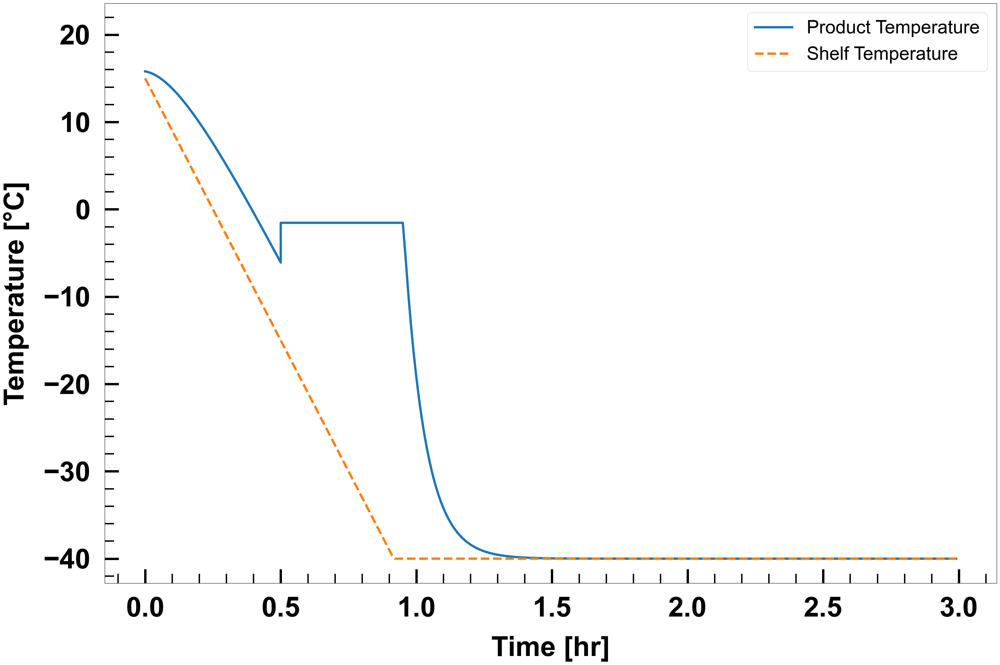

Simulate freezing
We need a few imports:
import matplotlib.pyplot as plt
from matplotlib import rc as matplotlibrc
from ruamel.yaml import YAML
yaml = YAML()
from lyopronto import freezing, plot_styling
Then, we provide all the necessary simulation parameters.
# Set up the simulation settings
# This needs to be a dict with string keys, which can be expressed in YAML as well
sim = yaml.load("""
tool: Freezing Calculator
Kv_known: Y
Rp_known: Y
Variable_Pch: N
Variable_Tsh: N
""")
# Or, equivalently:
sim = {
'tool': 'Freezing Calculator',
'Kv_known': 'Y',
'Rp_known': 'Y',
'Variable_Pch': 'N',
'Variable_Tsh': 'N'
}
# Vial and fill properties
vial = {
# Av = Vial area in cm^2
'Av': 3.80,
# Ap = Product Area in cm^2
'Ap': 3.14,
# Vfill = Fill volume in mL
'Vfill': 2.0
}
# Product properties for freezing
product = {
# cSolid = Fractional concentration of solute in the frozen solution
'cSolid': 0.0,
# Initial product temperature
'Tpr0': 15.8, # in deg C
# Freezing temperature
'Tf': -1.54, # in deg C
# Nucleation temperature
'Tn': -5.84, # in deg C
# Critical product temperature
# At least 2 to 3 deg C below collapse or glass transition temperature
'T_pr_crit': -5 # in deg C
}
# Shelf temperature profile
Tshelf = {
# init = Initial shelf temperature in C
'init': 15.0,
# setpt = Shelf temperature set points in C
'setpt': [-40.0],
# dt_setpt = Time for which shelf temperature set points are held in min
'dt_setpt': [180.0],
# ramp_rate = Shelf temperature ramping rate in C/min
'ramp_rate': 1.0
}
# Time step
dt = 0.01 # hr
# Equipment capability parameters (not used for freezing, but included for completeness)
eq_cap = {
'a': -0.182, # kg/hr
'b': 11.7 # kg/hr/Torr
}
# Number of vials (not used for freezing, but included for completeness)
nVial = 398
# Freezing heat transfer coefficient
h_freezing = 38.0 # W/m^2/K
Now, we are ready to actually run the simulation, which is lyopronto.freezing.freeze.
Info
Here is the docstring for freezing.freeze:
Simulates the primary drying process for a vial.
Parameters:
| Name | Type | Description | Default |
|---|---|---|---|
vial
|
dict
|
Vial properties, including 'Vfill', 'Ap', and 'Av'.. |
required |
product
|
dict
|
Product properties, including 'cSolid', initial temperature 'Tpr0', freezing temperature 'Tf', and nucleation temperature 'Tn'. |
required |
h_freezing
|
float
|
Heat transfer coefficient during freezing [W/m²/K]. |
required |
Tshelf
|
dict
|
Shelf temperature set points and time (see docs). |
required |
dt
|
float
|
Time step for the simulation [hr]. Used only as a sampling rate for output. |
required |
Returns:
| Type | Description |
|---|---|
|
np.ndarray: An array containing the time, shelf temperature, and product temperature at each time step. |
Source code in lyopronto/freezing.py
25 26 27 28 29 30 31 32 33 34 35 36 37 38 39 40 41 42 43 44 45 46 47 48 49 50 51 52 53 54 55 56 57 58 59 60 61 62 63 64 65 66 67 68 69 70 71 72 73 74 75 76 77 78 79 80 81 82 83 84 85 86 87 88 89 90 91 92 93 94 95 96 97 98 99 100 101 102 103 104 105 106 107 108 109 110 111 112 113 114 115 116 117 118 119 120 121 122 123 124 125 126 127 128 129 130 131 132 133 134 135 136 137 138 139 140 141 142 143 144 145 146 147 148 149 150 151 152 153 154 155 156 157 158 159 160 161 162 | |
Now, let's plot the results.
# Figure dimensions
figwidth = 30
figheight = 20
# Line width
lineWidth = 5
# Font family
plt.rcParams['font.family'] = 'Arial'
# Plot product and shelf temperature vs time
fig, ax = plt.subplots(figsize=(figwidth, figheight))
ax.plot(
output_table[:, 0], # Time [hr]
output_table[:, 2], # Product Temperature [°C]
linewidth=lineWidth,
label='Product Temperature'
)
ax.plot(
output_table[:, 0], # Time [hr]
output_table[:, 1], # Shelf Temperature [°C]
linewidth=lineWidth,
label='Shelf Temperature',
linestyle='--'
)
plot_styling.axis_style_temperature(ax)
plt.legend(fontsize=40,loc='best')
ll,ul = ax.get_ylim()
ax.set_ylim([ll,ul+5.0])
plt.tight_layout()
